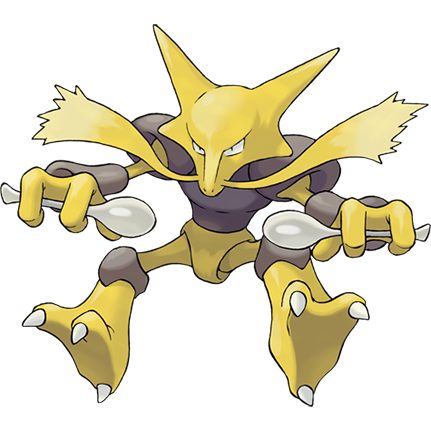

Hurray! You've saved Alakazam!
As a token of gratitude, he's given you this Social Badge.

Social connections are an important part of any game. Whether it's chatting, bragging, collaborating, or defeating, every type of player is motivated in part by some form of social interaction. Games are therefore most engaging when they involve the player in a community. The role they choose to take is up to them, but the interpersonal component connects people through the screen, rather than to the screen. The classroom is our community and ensuring and directing positive student-to-student interactions is essential to its success.
For more information about how Bartle's Four Gamer Types can be applied in the classroom, check out this Edudemic article by Douglas Kiang.